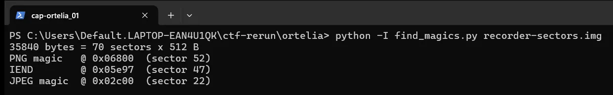
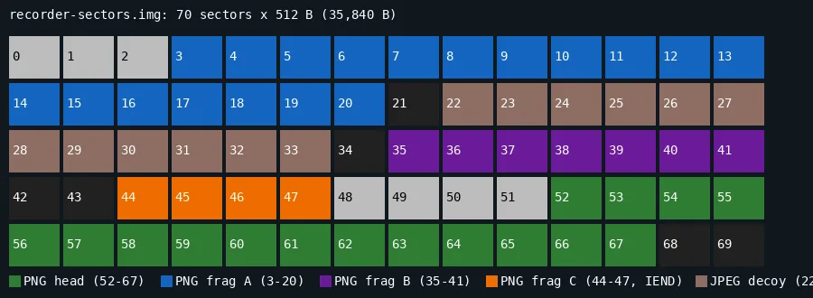
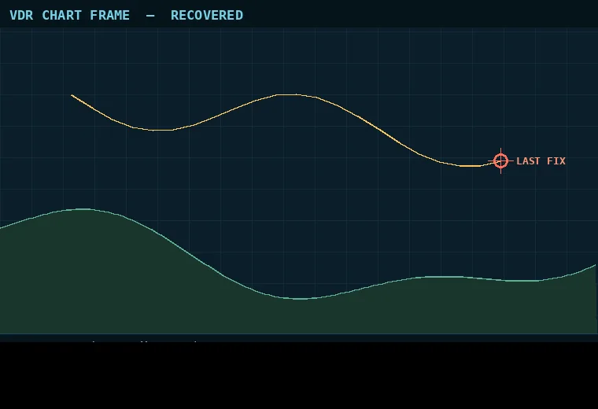
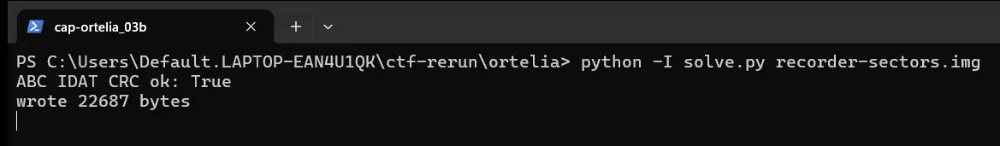
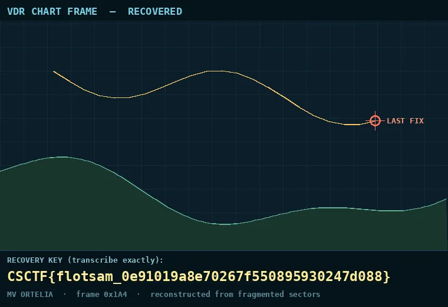

01Start point: map the raw recorder dump
- What I did: walked recorder-sectors.img, a raw chip-off flash dump with no filesystem, in 512-byte sectors and searched it for file magics with find_magics.py.
- What I found: the sectors fall into a few kinds:
- NMEA text ($GPRMC lines) in sectors 0 to 2 and 48 to 51
- a JPEG header (FF D8 FF E0, JFIF) at sector 22, running through sector 33
- the PNG magic at 0x6800 (sector 52)
- all-zero sectors 21, 34, 42, 43, 68 and 69
- high-entropy data everywhere else
- What I found: the only IEND is at 0x5E97 (sector 47), before the PNG header.
- Thinking: an IEND that sits before its own header means the PNG is fragmented, and the JPEG has nothing to do with a PNG chart frame, so I treated it as a decoy.


02Dead end: the naive carve opens but is cut off
- What I did: cut from the PNG header to the end of the data (sectors 52 to 67, 16 sectors, then zeros).
- What I found: the file opens as 760x520 in a viewer that tolerates truncation, but the bottom is black and the recovery key is missing.
- What I found: the chunks are IHDR (13 bytes) then a single IDAT of 22,630 bytes. The whole PNG needs 8 + 25 + 22,642 + 12 = 22,687 bytes, which is 45 sectors, but only 16 sit after the header.
- Thinking: this is exactly the hint's "opens but is not whole" case, and the IDAT length says 29 sectors are somewhere else.

03Pivot: rebuild the fragment chain with the IDAT CRC
- What I found: the non-zero runs that are not text and not JPEG add up to exactly 29 sectors, with the zero sectors as the gaps between them:
- fragment A: sectors 3 to 20 (18 sectors)
- fragment B: sectors 35 to 41 (7 sectors)
- fragment C: sectors 44 to 47 (4 sectors, ends with the IEND chunk)
- What I did: put the head (52 to 67) first and C last, tried A and B in both orders, and checked the CRC32 over the IDAT type and data. Head plus A, B, C matches; head plus B, A, C does not.
- What I did: trimmed the result to 22,687 bytes, since the IEND chunk ends 159 bytes into sector 47.
- Thinking: C must be last because it holds IEND, and the IDAT CRC32 only matches when every byte is in place, so it settles the middle order.

04Flag: read the key off the rebuilt chart frame
- What I found: the reassembled PNG shows "VDR CHART FRAME - RECOVERED", a track ending at a LAST FIX marker, and the footer "RECOVERY KEY (transcribe exactly)" with the key below it.
- Thinking: the CRC had already proved the bytes whole, so the footer the naive carve lost could be read as printed.
- Result: CSCTF{flotsam_0e91019a8e70267f550895930247d088}
